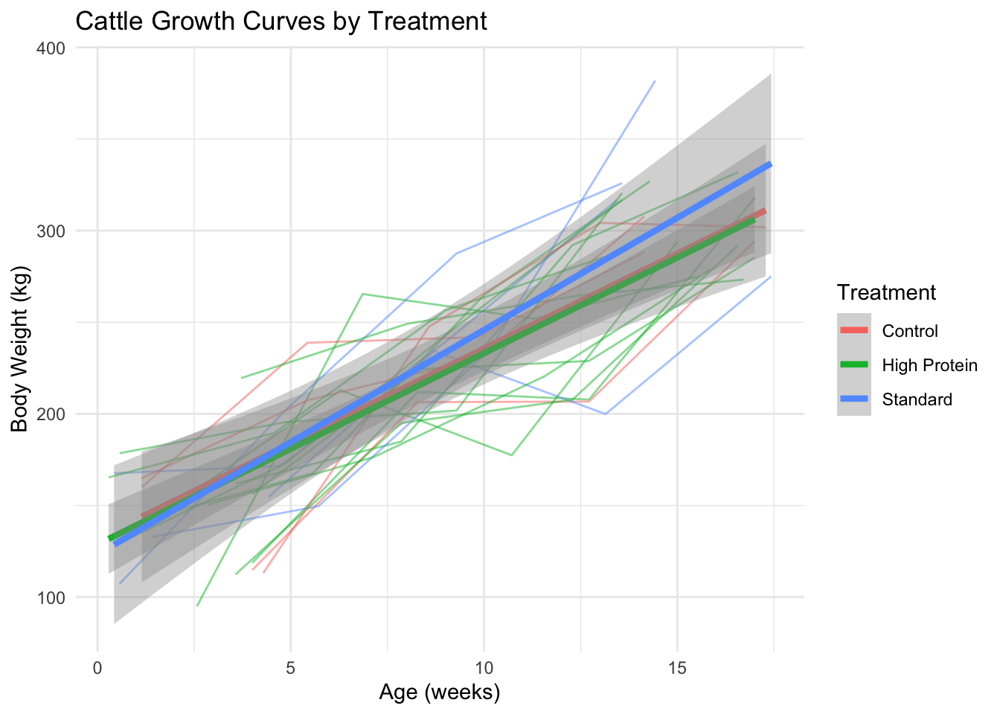
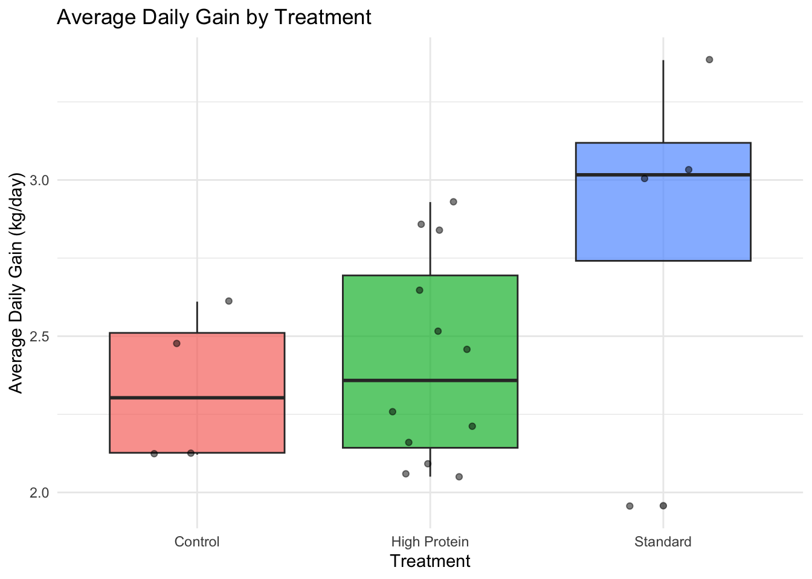

# Load packages
library(tidyverse) # Core data science tools
library(haven) # Statistical software files
library(readxl) # Read Excel
library(writexl) # Write simple Excel
library(janitor) # Data cleaning
library(lubridate) # Dates and times
library(glue) # String interpolation
# Optional: Install openxlsx if you need advanced Excel formatting
# install.packages("openxlsx")8 Special Data Formats, Integration, and Course Wrap-up
8.1 Learning Objectives
By the end of this chapter, you will be able to:
- Read data from SAS (
.sas7bdat), SPSS (.sav), and Stata (.dta) files using thehavenpackage - Work with Excel files for reading (simple and advanced) and writing with formatting
- Use
janitorfor data cleaning tasks like fixing column names and removing duplicates - Manipulate dates and times effectively with
lubridate - Create dynamic strings with the
gluepackage - Apply the complete data science workflow from raw data to final report
- Implement reproducibility best practices in your analysis projects
- Understand how data science skills enable statistical analysis (Part 2 preview)
- Identify career paths in data science and resources for continued learning
- Complete a capstone project integrating all skills from Part 1
8.2 Introduction
Congratulations on reaching the final chapter of Part 1! Over the past seven weeks, you’ve built a comprehensive foundation in data science using R, RStudio, and the tidyverse ecosystem. You’ve learned to read data, clean and transform it, visualize patterns, and create reproducible reports.
This chapter serves three important purposes:
- Technical Skills: Introduce additional tools for working with data in formats you’ll encounter in the real world
- Integration: Review and synthesize the complete data science workflow
- Transition: Prepare you for Part 2 (statistics) and point you toward continued learning
In the real world, data rarely arrives in clean CSV files. You might receive:
- Data from colleagues using SAS, SPSS, or Stata (common in animal science research)
- Excel files with multiple sheets, formatting, and formulas
- Messy column names that need standardization
- Date and time data in various formats
- The need to create formatted Excel reports for stakeholders
This chapter will equip you to handle these situations confidently.
NoteInstalling Packages for This Chapter
You’ll need several packages that may not be installed yet:
install.packages(c(
"haven", # Read SAS, SPSS, Stata files
"readxl", # Read Excel files (you should have this)
"writexl", # Write simple Excel files
"openxlsx", # Advanced Excel operations
"janitor", # Data cleaning utilities
"lubridate", # Date/time manipulation
"glue" # String interpolation
))8.3 Reading Data from Statistical Software
Many researchers in animal science and related fields use SAS, SPSS, or Stata for their analyses. If you need to collaborate with these researchers or access legacy data, you’ll need to read these file formats. The haven package makes this straightforward.
8.3.1 The haven Package
haven can read:
- SAS:
.sas7bdat(data files),.sas7bcat(catalog files) - SPSS:
.savfiles - Stata:
.dtafiles
All three software packages support variable labels (longer descriptions) and value labels (like factor levels in R). haven preserves this metadata.
8.3.2 Reading SAS Files
# Create a simulated SAS-style dataset for demonstration
# In reality, you'd receive this file from a colleague
sas_cattle_data <- tibble(
id = 1:10,
treatment = c(1, 1, 1, 1, 1, 2, 2, 2, 2, 2),
weight_gain_kg = c(125, 130, 118, 135, 128, 145, 152, 138, 148, 143)
)
# Save as SAS file (for demonstration)
write_sas(sas_cattle_data, "../data/raw/cattle_trial.sas7bdat")
# Now read it back
cattle_sas <- read_sas("../data/raw/cattle_trial.sas7bdat")
cattle_sas# A tibble: 10 × 3
id treatment weight_gain_kg
<dbl> <dbl> <dbl>
1 1 1 125
2 2 1 130
3 3 1 118
4 4 1 135
5 5 1 128
6 6 2 145
7 7 2 152
8 8 2 138
9 9 2 148
10 10 2 1438.3.3 Reading SPSS Files
# Create labeled data similar to SPSS format
spss_feeding_data <- tibble(
animal_id = 1:15,
feed_type = c(rep(1, 5), rep(2, 5), rep(3, 5)),
daily_gain_kg = rnorm(15, mean = 1.5, sd = 0.3)
)
# Write as SPSS file
write_sav(spss_feeding_data, "../data/raw/feeding_study.sav")
# Read it back
feeding_spss <- read_sav("../data/raw/feeding_study.sav")
feeding_spss# A tibble: 15 × 3
animal_id feed_type daily_gain_kg
<dbl> <dbl> <dbl>
1 1 1 1.49
2 2 1 1.11
3 3 1 1.34
4 4 1 1.63
5 5 1 1.32
6 6 2 1.52
7 7 2 1.51
8 8 2 1.33
9 9 2 1.34
10 10 2 1.67
11 11 3 1.82
12 12 3 1.01
13 13 3 1.94
14 14 3 1.32
15 15 3 1.298.3.4 Reading Stata Files
# Create Stata-style dataset
stata_breeding_data <- tibble(
cow_id = 1001:1020,
parity = sample(1:4, 20, replace = TRUE),
conception = sample(0:1, 20, replace = TRUE)
)
# Write as Stata file
write_dta(stata_breeding_data, "../data/raw/breeding_records.dta")
# Read it back
breeding_stata <- read_dta("../data/raw/breeding_records.dta")
breeding_stata# A tibble: 20 × 3
cow_id parity conception
<dbl> <dbl> <dbl>
1 1001 1 1
2 1002 3 1
3 1003 4 1
4 1004 2 1
5 1005 2 0
6 1006 4 0
7 1007 2 1
8 1008 1 0
9 1009 2 1
10 1010 1 0
11 1011 3 1
12 1012 1 1
13 1013 3 0
14 1014 2 0
15 1015 4 0
16 1016 2 1
17 1017 4 1
18 1018 2 1
19 1019 1 0
20 1020 4 18.3.5 Working with Labeled Data
Statistical software often uses numeric codes with text labels. For example, 1 = "Control" and 2 = "Treatment". haven preserves these as labeled vectors.
# Create data with value labels (like SPSS)
labeled_data <- tibble(
id = 1:6,
sex = c(1, 2, 1, 2, 1, 2),
breed = c(1, 1, 2, 2, 3, 3)
) %>%
mutate(
sex = labelled(sex, c("Male" = 1, "Female" = 2)),
breed = labelled(breed, c("Angus" = 1, "Hereford" = 2, "Charolais" = 3))
)
# View the structure
str(labeled_data)tibble [6 × 3] (S3: tbl_df/tbl/data.frame)
$ id : int [1:6] 1 2 3 4 5 6
$ sex : dbl+lbl [1:6] 1, 2, 1, 2, 1, 2
..@ labels: Named num [1:2] 1 2
.. ..- attr(*, "names")= chr [1:2] "Male" "Female"
$ breed: dbl+lbl [1:6] 1, 1, 2, 2, 3, 3
..@ labels: Named num [1:3] 1 2 3
.. ..- attr(*, "names")= chr [1:3] "Angus" "Hereford" "Charolais"# Convert labeled columns to factors for analysis
labeled_data_clean <- labeled_data %>%
mutate(
sex = as_factor(sex),
breed = as_factor(breed)
)
labeled_data_clean# A tibble: 6 × 3
id sex breed
<int> <fct> <fct>
1 1 Male Angus
2 2 Female Angus
3 3 Male Hereford
4 4 Female Hereford
5 5 Male Charolais
6 6 Female Charolais
TipConverting Labeled Data
When you read SAS/SPSS/Stata files with labels, use as_factor() from haven to convert labeled columns to regular R factors. This makes them easier to work with in tidyverse functions.
# Convert all labeled columns at once
data_clean <- data %>%
mutate(across(where(is.labelled), as_factor))8.3.6 When You Might Need haven
- Collaborating with researchers who use SAS/SPSS/Stata
- Accessing institutional databases stored in these formats
- Converting legacy data to R for new analyses
- Maintaining compatibility with established workflows
8.4 Working with Excel Files
Excel is ubiquitous in business and research settings. While we generally prefer CSV files for data storage, you’ll often need to read from or write to Excel files.
8.4.1 Reading Excel Files (Review + Advanced)
We covered readxl basics in Week 2. Let’s review and add advanced features:
# Create a sample Excel file for demonstration
cattle_summary <- tibble(
breed = c("Angus", "Hereford", "Charolais", "Limousin"),
n_animals = c(45, 38, 42, 35),
avg_weight_kg = c(520, 495, 535, 510),
avg_gain_kg = c(1.45, 1.38, 1.52, 1.41)
)
# Write to Excel
write_xlsx(cattle_summary, "../data/raw/cattle_summary.xlsx")
# Read back - basic
read_excel("../data/raw/cattle_summary.xlsx")# A tibble: 4 × 4
breed n_animals avg_weight_kg avg_gain_kg
<chr> <dbl> <dbl> <dbl>
1 Angus 45 520 1.45
2 Hereford 38 495 1.38
3 Charolais 42 535 1.52
4 Limousin 35 510 1.418.4.2 Reading Specific Ranges and Sheets
NoteNote on openxlsx
The code below uses openxlsx to create multi-sheet Excel files. If you want to run this code, first install the package:
install.packages("openxlsx")
library(openxlsx)# Create multi-sheet Excel file
weight_data <- tibble(
week = 0:12,
weight_kg = c(42, 48, 54, 60, 66, 72, 78, 84, 90, 96, 102, 108, 114)
)
health_data <- tibble(
week = 0:12,
health_score = sample(1:5, 13, replace = TRUE)
)
# Write multiple sheets (requires openxlsx package)
library(openxlsx)
wb <- createWorkbook()
addWorksheet(wb, "Weights")
addWorksheet(wb, "Health")
writeData(wb, "Weights", weight_data)
writeData(wb, "Health", health_data)
saveWorkbook(wb, "../data/raw/calf_data.xlsx", overwrite = TRUE)
# Read specific sheet
read_excel("../data/raw/calf_data.xlsx", sheet = "Weights")
# List all sheets first
excel_sheets("../data/raw/calf_data.xlsx")
# Read specific range (e.g., first 5 rows)
read_excel("../data/raw/calf_data.xlsx",
sheet = "Weights",
range = "A1:B6")8.4.3 Writing Simple Excel Files with writexl
For basic Excel export without formatting, writexl is fast and simple:
# Write single sheet
write_xlsx(cattle_summary, "output_cattle.xlsx")
# Write multiple sheets as a list
cattle_list <- list(
Summary = cattle_summary,
Weights = weight_data,
Health = health_data
)
write_xlsx(cattle_list, "output_multi_sheet.xlsx")8.4.4 Advanced Excel Operations with openxlsx
For formatted reports, use openxlsx:
# Create a formatted Excel report
wb <- createWorkbook()
# Add a worksheet
addWorksheet(wb, "Performance Report")
# Write title
writeData(wb, "Performance Report",
"Cattle Performance Summary - 2024",
startRow = 1, startCol = 1)
# Format title (bold, larger, colored)
addStyle(wb, "Performance Report",
style = createStyle(fontSize = 16, textDecoration = "bold",
fgFill = "#4F81BD", fontColour = "#FFFFFF"),
rows = 1, cols = 1:4, gridExpand = TRUE)
# Write data starting at row 3
writeData(wb, "Performance Report", cattle_summary, startRow = 3)
# Format header row
addStyle(wb, "Performance Report",
style = createStyle(textDecoration = "bold",
fgFill = "#D9E1F2"),
rows = 3, cols = 1:4, gridExpand = TRUE)
# Add borders
addStyle(wb, "Performance Report",
style = createStyle(border = "TopBottomLeftRight"),
rows = 3:7, cols = 1:4, gridExpand = TRUE, stack = TRUE)
# Set column widths
setColWidths(wb, "Performance Report", cols = 1:4, widths = c(15, 12, 15, 15))
# Add a formula (total animals)
writeFormula(wb, "Performance Report",
x = "=SUM(B4:B7)",
startRow = 8, startCol = 2)
# Save
saveWorkbook(wb, "../data/raw/formatted_cattle_report.xlsx", overwrite = TRUE)
ImportantWhen to Use Excel vs CSV
Use CSV when: - Data will be read by R, Python, or databases - You want simplicity and version control (text files) - No special formatting needed
Use Excel when: - Sharing with non-technical stakeholders - Multiple related tables (sheets) belong together - Formatting enhances readability (colors, bold, borders) - Client specifically requests Excel format
8.5 Essential Utility Packages
Three packages that will make your data cleaning life much easier:
8.5.1 The janitor Package
janitor provides simple functions for common data cleaning tasks.
8.5.1.1 clean_names(): Fix Messy Column Names
# Messy data with terrible column names (realistic!)
messy_data <- tibble(
`Animal ID` = 1:5,
`Birth Weight (kg)` = c(42, 45, 39, 44, 41),
`Final Weight-KG` = c(520, 535, 498, 528, 512),
`%Daily Gain` = c(1.45, 1.48, 1.39, 1.46, 1.43),
`Dam's ID` = c(101, 102, 103, 104, 105)
)
messy_data# A tibble: 5 × 5
`Animal ID` `Birth Weight (kg)` `Final Weight-KG` `%Daily Gain` `Dam's ID`
<int> <dbl> <dbl> <dbl> <dbl>
1 1 42 520 1.45 101
2 2 45 535 1.48 102
3 3 39 498 1.39 103
4 4 44 528 1.46 104
5 5 41 512 1.43 105# Clean it up!
clean_data <- messy_data %>%
clean_names()
clean_data# A tibble: 5 × 5
animal_id birth_weight_kg final_weight_kg percent_daily_gain dams_id
<int> <dbl> <dbl> <dbl> <dbl>
1 1 42 520 1.45 101
2 2 45 535 1.48 102
3 3 39 498 1.39 103
4 4 44 528 1.46 104
5 5 41 512 1.43 105# Now you have snake_case names that work well with R
# animal_id, birth_weight_kg, final_weight_kg, percent_daily_gain, dam_s_id
TipAlways Use clean_names()
Make it a habit to run clean_names() immediately after reading data from external sources. It prevents countless headaches with spaces, special characters, and inconsistent naming.
data <- read_excel("messy_file.xlsx") %>%
clean_names()8.5.1.2 tabyl(): Better Frequency Tables
# Create sample data
animals <- tibble(
breed = sample(c("Angus", "Hereford", "Charolais"), 100, replace = TRUE),
sex = sample(c("M", "F"), 100, replace = TRUE),
treatment = sample(c("Control", "Treatment"), 100, replace = TRUE)
)
# Base R table (basic)
table(animals$breed)
Angus Charolais Hereford
34 28 38 # janitor's tabyl (better!)
animals %>%
tabyl(breed) breed n percent
Angus 34 0.34
Charolais 28 0.28
Hereford 38 0.38# Two-way table with totals
animals %>%
tabyl(breed, sex) %>%
adorn_totals(c("row", "col")) breed F M Total
Angus 19 15 34
Charolais 14 14 28
Hereford 21 17 38
Total 54 46 100# Add percentages
animals %>%
tabyl(breed, sex) %>%
adorn_percentages("row") %>%
adorn_pct_formatting(digits = 1) %>%
adorn_ns() # Add counts in parentheses breed F M
Angus 55.9% (19) 44.1% (15)
Charolais 50.0% (14) 50.0% (14)
Hereford 55.3% (21) 44.7% (17)8.5.1.3 remove_empty() and get_dupes()
# Data with empty rows/columns
data_with_empties <- tibble(
id = c(1, 2, NA, 4, 5),
weight = c(50, 55, NA, 60, 65),
empty_col = rep(NA, 5),
breed = c("Angus", "Angus", NA, "Hereford", "Hereford")
)
# Remove empty rows and columns
data_with_empties %>%
remove_empty(c("rows", "cols"))# A tibble: 4 × 3
id weight breed
<dbl> <dbl> <chr>
1 1 50 Angus
2 2 55 Angus
3 4 60 Hereford
4 5 65 Hereford# Find duplicates
dup_data <- tibble(
animal_id = c("A001", "A002", "A003", "A001", "A004"),
weight = c(50, 55, 60, 50, 65)
)
dup_data %>%
get_dupes(animal_id)# A tibble: 2 × 3
animal_id dupe_count weight
<chr> <int> <dbl>
1 A001 2 50
2 A001 2 508.5.2 The lubridate Package
Working with dates and times in base R is painful. lubridate makes it intuitive.
8.5.2.1 Parsing Dates
# Different date formats
dates_various <- c("2024-01-15", "January 20, 2024", "03/25/2024", "2024-04-10")
# lubridate parsing functions
ymd("2024-01-15") # Year-Month-Day[1] "2024-01-15"mdy("03/25/2024") # Month-Day-Year[1] "2024-03-25"dmy("15-01-2024") # Day-Month-Year[1] "2024-01-15"# Parse with times
ymd_hms("2024-01-15 14:30:00")[1] "2024-01-15 14:30:00 UTC"8.5.2.2 Extracting Components
# Sample birthdates
cattle <- tibble(
animal_id = c("C001", "C002", "C003", "C004"),
birth_date = ymd(c("2023-03-15", "2023-04-02", "2023-03-28", "2023-05-10"))
)
cattle <- cattle %>%
mutate(
birth_year = year(birth_date),
birth_month = month(birth_date, label = TRUE), # Jan, Feb, etc.
birth_day = day(birth_date),
birth_week = week(birth_date),
birth_quarter = quarter(birth_date)
)
cattle# A tibble: 4 × 7
animal_id birth_date birth_year birth_month birth_day birth_week birth_quarter
<chr> <date> <dbl> <ord> <int> <dbl> <int>
1 C001 2023-03-15 2023 Mar 15 11 1
2 C002 2023-04-02 2023 Apr 2 14 2
3 C003 2023-03-28 2023 Mar 28 13 1
4 C004 2023-05-10 2023 May 10 19 28.5.2.3 Date Arithmetic
# Calculate age in days
cattle <- cattle %>%
mutate(
today_date = ymd("2024-11-14"),
age_days = as.numeric(today_date - birth_date),
age_weeks = age_days / 7,
age_months = age_days / 30.44 # Approximate
)
cattle %>%
select(animal_id, birth_date, age_days, age_weeks)# A tibble: 4 × 4
animal_id birth_date age_days age_weeks
<chr> <date> <dbl> <dbl>
1 C001 2023-03-15 610 87.1
2 C002 2023-04-02 592 84.6
3 C003 2023-03-28 597 85.3
4 C004 2023-05-10 554 79.1# Add time intervals
cattle %>%
mutate(
weaning_date = birth_date + weeks(8),
yearling_date = birth_date + years(1)
) %>%
select(animal_id, birth_date, weaning_date, yearling_date)# A tibble: 4 × 4
animal_id birth_date weaning_date yearling_date
<chr> <date> <date> <date>
1 C001 2023-03-15 2023-05-10 2024-03-15
2 C002 2023-04-02 2023-05-28 2024-04-02
3 C003 2023-03-28 2023-05-23 2024-03-28
4 C004 2023-05-10 2023-07-05 2024-05-10 8.5.2.4 Working with Periods and Durations
# Periods (human units: 1 month = 1 month regardless of days)
today() + months(1)[1] "2025-12-14"today() + weeks(2)[1] "2025-11-28"# Durations (exact seconds)
today() + ddays(30) # Exactly 30 days[1] "2025-12-14"today() + dhours(24) # Exactly 24 hours[1] "2025-11-15"# Time intervals
birth <- ymd("2023-03-15")
weaning <- ymd("2023-05-10")
interval(birth, weaning) / days(1) # Days between dates[1] 56interval(birth, weaning) / weeks(1) # Weeks between dates[1] 8
TipCommon lubridate Functions
- Parsing:
ymd(),mdy(),dmy(),ymd_hms() - Extracting:
year(),month(),day(),week(),quarter(),wday() - Arithmetic:
+/-withdays(),weeks(),months(),years() - Current date/time:
today(),now() - Intervals:
interval(),time_length()
8.5.3 The glue Package
glue provides elegant string interpolation (inserting variables into strings).
# Instead of paste() or paste0()
animal_id <- "C001"
weight <- 520
breed <- "Angus"
# Base R way (clunky)
paste0("Animal ", animal_id, " (", breed, ") weighs ", weight, " kg")[1] "Animal C001 (Angus) weighs 520 kg"# glue way (elegant!)
glue("Animal {animal_id} ({breed}) weighs {weight} kg")Animal C001 (Angus) weighs 520 kg8.5.3.1 glue_data() for Data Frames
# Create reports for each row
cattle_report <- tibble(
animal_id = c("C001", "C002", "C003"),
breed = c("Angus", "Hereford", "Charolais"),
weight = c(520, 495, 535),
gain = c(1.45, 1.38, 1.52)
)
cattle_report %>%
mutate(
summary = glue_data(.,
"Animal {animal_id} is a {breed} weighing {weight} kg with a daily gain of {gain} kg/day."
)
) %>%
pull(summary)Animal C001 is a Angus weighing 520 kg with a daily gain of 1.45 kg/day.
Animal C002 is a Hereford weighing 495 kg with a daily gain of 1.38 kg/day.
Animal C003 is a Charolais weighing 535 kg with a daily gain of 1.52 kg/day.8.5.3.2 Dynamic Column Names
# Create dynamic column names in summaries
treatment_var <- "treatment"
metric <- "weight_gain"
# Use glue for dynamic naming
summary_data <- tibble(
treatment = c("Control", "Treatment A"),
avg_gain = c(1.35, 1.48)
)
summary_data %>%
rename(
"{treatment_var}" := treatment,
"avg_{metric}" := avg_gain
)# A tibble: 2 × 2
treatment avg_weight_gain
<chr> <dbl>
1 Control 1.35
2 Treatment A 1.488.6 The Complete Data Science Workflow
Let’s synthesize everything you’ve learned into a comprehensive workflow. This is what you do when tackling a real data analysis project:
flowchart TD
A[1. Define Question] --> B[2. Import Data]
B --> C[3. Explore & Clean]
C --> D[4. Transform & Reshape]
D --> E[5. Visualize]
E --> F[6. Model/Analyze]
F --> G[7. Communicate Results]
G --> H{Need to Refine?}
H -->|Yes| C
H -->|No| I[Final Report]
style A fill:#e1f5ff
style I fill:#d4edda
- Week 1: Foundations
- What is data science
- Best practices (project structure, file naming, database concepts)
- R, RStudio, Quarto setup
- Version control basics
- Week 2: Getting Started
- RStudio interface
- R Projects and working directories
- Reading CSV (
readr::read_csv()) and Excel (readxl::read_excel()) - First look at data:
glimpse(),summary()
- Week 3: Data Types & Strings
- R data types (numeric, character, factor, logical, dates)
- String manipulation (
stringr) - Regular expressions
- The pipe operator:
%>%and|> - First dplyr verbs:
select(),filter()
- Week 4: Data Manipulation
- Core dplyr verbs:
mutate(),arrange(),group_by(),summarise() across()for multiple columns- Conditional logic:
if_else(),case_when() - Handling missing data:
drop_na(),replace_na() - Window functions:
lag(),lead(),cumsum()
- Core dplyr verbs:
- Week 5: Visualization Basics
- Grammar of Graphics
- Essential geoms:
geom_point(),geom_line(),geom_col(),geom_histogram(),geom_boxplot(),geom_violin() - Aesthetic mappings:
x,y,color,fill,size,shape - Scales, themes, labels
- Saving plots with
ggsave()
- Week 6: Advanced Visualization
- Faceting:
facet_wrap(),facet_grid() - Statistical layers:
geom_smooth(),stat_summary() - Custom themes and color palettes
- Text annotations
- Combining plots:
cowplot,patchwork
- Faceting:
- Week 7: Reshaping & Joining
- Tidy data principles
- Reshaping:
pivot_longer(),pivot_wider(),separate(),unite() - Joining:
left_join(),right_join(),inner_join(),full_join() - Functional programming:
purrr::map()functions - List columns and nested data
- Week 8: Integration (This Week!)
- Reading statistical software files (
haven) - Excel workflows (
readxl,writexl,openxlsx) - Data cleaning (
janitor) - Date/time handling (
lubridate) - String interpolation (
glue) - Complete workflow synthesis
- Reading statistical software files (
8.6.1 Real-World Example: Complete Analysis Pipeline
Let’s work through a complete example from raw messy data to final report.
Scenario: You receive cattle weight data from three sources: 1. Birth records from a colleague (SAS file) 2. Monthly weight measurements (messy Excel file) 3. Treatment assignments (CSV file)
Your task: Analyze weight gain by treatment and create a report.
8.6.1.1 Step 1: Import from Multiple Sources
# Source 1: Birth records (SAS file - simulated)
birth_records <- tibble(
animal_id = sprintf("C%03d", 1:20),
birth_date = ymd("2023-03-01") + days(sample(0:30, 20, replace = TRUE)),
dam_id = sample(1001:1010, 20, replace = TRUE),
birth_weight_kg = rnorm(20, mean = 42, sd = 5)
)
# Source 2: Monthly weights (messy Excel - simulated)
weight_measurements <- tibble(
`Animal ID` = rep(sprintf("C%03d", 1:20), each = 4),
`Measurement Date` = rep(c("2023-04-01", "2023-05-01", "2023-06-01", "2023-07-01"), times = 20),
`Body Weight (kg)` = rnorm(80, mean = 150, sd = 30) + rep(0:3, times = 20) * 50,
`Notes` = sample(c(NA, "healthy", ""), 80, replace = TRUE)
)
# Source 3: Treatment assignments (CSV)
treatments <- tibble(
animal_id = sprintf("C%03d", 1:20),
treatment = sample(c("Control", "High Protein", "Standard"), 20, replace = TRUE),
assigned_date = ymd("2023-03-15")
)8.6.1.2 Step 2: Clean Each Dataset
# Clean birth records (already clean in this case)
birth_clean <- birth_records
# Clean weight measurements
weights_clean <- weight_measurements %>%
clean_names() %>% # Fix column names
mutate(
measurement_date = ymd(measurement_date),
body_weight_kg = round(body_weight_kg, 1)
) %>%
select(-notes) # Remove empty notes column
# Clean treatments (already clean)
treatments_clean <- treatments
glimpse(weights_clean)Rows: 80
Columns: 3
$ animal_id <chr> "C001", "C001", "C001", "C001", "C002", "C002", "C002…
$ measurement_date <date> 2023-04-01, 2023-05-01, 2023-06-01, 2023-07-01, 2023…
$ body_weight_kg <dbl> 161.9, 184.9, 292.1, 331.9, 118.7, 212.0, 207.8, 317.…8.6.1.3 Step 3: Join Datasets
# Join everything together
complete_data <- birth_clean %>%
left_join(treatments_clean, by = "animal_id") %>%
left_join(weights_clean, by = "animal_id") %>%
# Calculate age at measurement
mutate(
age_days = as.numeric(measurement_date - birth_date),
age_weeks = age_days / 7
)
glimpse(complete_data)Rows: 80
Columns: 10
$ animal_id <chr> "C001", "C001", "C001", "C001", "C002", "C002", "C002…
$ birth_date <date> 2023-03-07, 2023-03-07, 2023-03-07, 2023-03-07, 2023…
$ dam_id <int> 1005, 1005, 1005, 1005, 1010, 1010, 1010, 1010, 1005,…
$ birth_weight_kg <dbl> 40.21847, 40.21847, 40.21847, 40.21847, 48.69910, 48.…
$ treatment <chr> "High Protein", "High Protein", "High Protein", "High…
$ assigned_date <date> 2023-03-15, 2023-03-15, 2023-03-15, 2023-03-15, 2023…
$ measurement_date <date> 2023-04-01, 2023-05-01, 2023-06-01, 2023-07-01, 2023…
$ body_weight_kg <dbl> 161.9, 184.9, 292.1, 331.9, 118.7, 212.0, 207.8, 317.…
$ age_days <dbl> 25, 55, 86, 116, 28, 58, 89, 119, 18, 48, 79, 109, 3,…
$ age_weeks <dbl> 3.5714286, 7.8571429, 12.2857143, 16.5714286, 4.00000…8.6.1.4 Step 4: Transform and Summarize
# Calculate growth rates
growth_analysis <- complete_data %>%
group_by(animal_id, treatment) %>%
summarise(
birth_weight = first(birth_weight_kg),
final_weight = last(body_weight_kg),
total_gain = final_weight - birth_weight,
days_measured = max(age_days),
avg_daily_gain = total_gain / days_measured,
.groups = "drop"
)
# Summary by treatment
treatment_summary <- growth_analysis %>%
group_by(treatment) %>%
summarise(
n = n(),
mean_adg = mean(avg_daily_gain),
sd_adg = sd(avg_daily_gain),
min_adg = min(avg_daily_gain),
max_adg = max(avg_daily_gain)
)
treatment_summary# A tibble: 3 × 6
treatment n mean_adg sd_adg min_adg max_adg
<chr> <int> <dbl> <dbl> <dbl> <dbl>
1 Control 4 2.33 0.248 2.12 2.61
2 High Protein 12 2.42 0.330 2.05 2.93
3 Standard 4 2.84 0.616 1.96 3.388.6.1.5 Step 5: Visualize
# Growth curves by treatment
complete_data %>%
ggplot(aes(x = age_weeks, y = body_weight_kg,
color = treatment, group = animal_id)) +
geom_line(alpha = 0.5) +
geom_smooth(aes(group = treatment), method = "lm", se = TRUE, size = 1.5) +
labs(
title = "Cattle Growth Curves by Treatment",
x = "Age (weeks)",
y = "Body Weight (kg)",
color = "Treatment"
) +
theme_minimal()
# Distribution of daily gains
growth_analysis %>%
ggplot(aes(x = treatment, y = avg_daily_gain, fill = treatment)) +
geom_boxplot(alpha = 0.7) +
geom_jitter(width = 0.2, alpha = 0.5) +
labs(
title = "Average Daily Gain by Treatment",
x = "Treatment",
y = "Average Daily Gain (kg/day)"
) +
theme_minimal() +
theme(legend.position = "none")
8.6.1.6 Step 6: Create Summary Report
# Generate text summaries with glue
treatment_summary %>%
mutate(
report_text = glue(
"The {treatment} group (n={n}) had an average daily gain of {round(mean_adg, 3)} kg/day (SD = {round(sd_adg, 3)})."
)
) %>%
pull(report_text)The Control group (n=4) had an average daily gain of 2.334 kg/day (SD = 0.248).
The High Protein group (n=12) had an average daily gain of 2.423 kg/day (SD = 0.33).
The Standard group (n=4) had an average daily gain of 2.844 kg/day (SD = 0.616).
NoteComplete Workflow in Action
This example demonstrates: 1. Importing from multiple sources 2. Cleaning with janitor::clean_names() and date parsing 3. Joining with left_join() 4. Transforming with mutate() and group_by() %>% summarise() 5. Visualizing with ggplot2 6. Communicating with summary statistics and glue
This is exactly what you’ll do in your capstone project!
8.7 Reproducibility Best Practices
Reproducibility means someone else (including future you!) can re-run your analysis and get the same results. Here’s a checklist:
8.7.1 Project Organization Checklist
my_project/
├── README.md # Project overview, how to run
├── my_project.Rproj # RStudio project file
├── data/
│ ├── raw/ # Original, untouched data (read-only!)
│ └── processed/ # Cleaned data (created by scripts)
├── code/
│ ├── 01_import.R # Data import scripts
│ ├── 02_clean.R # Cleaning scripts
│ └── 03_analysis.R # Analysis scripts
├── output/
│ ├── figures/ # Generated plots
│ └── tables/ # Generated tables
├── reports/
│ └── final_report.qmd # Quarto reports
└── renv.lock # Package versions (if using renv)
ImportantGolden Rules
- Never modify raw data files - Keep originals pristine
- Use R Projects - Avoid
setwd(), use relative paths - Document everything - Comments, README, codebooks
- Version control - Use Git from the start
- Explicit packages - Always use
library()at the top of scripts
8.7.2 File Naming Conventions
Good file names: - 2024-11-14_cattle-weights_final.csv - 01_import_data.R - fig01_growth_curves.png
Bad file names: - data.csv (not descriptive) - analysis final FINAL v2.R (version chaos) - my file with spaces.csv (spaces cause problems)
Principles: - Use dates: YYYY-MM-DD_description.ext - Use numbers for order: 01_, 02_, 03_ - Use hyphens or underscores (no spaces) - Be descriptive but concise - Use lowercase
8.7.3 Code Style Best Practices
# GOOD: Clear, readable, consistent
cattle_data <- read_csv("../data/raw/cattle_weights.csv") %>%
clean_names() %>%
filter(weight_kg > 0) %>%
mutate(
weight_lb = weight_kg * 2.20462,
weight_category = case_when(
weight_kg < 400 ~ "Light",
weight_kg < 500 ~ "Medium",
TRUE ~ "Heavy"
)
)
# BAD: Hard to read, inconsistent spacing
cattle_data<-read_csv("../data/raw/cattle_weights.csv")%>%clean_names()%>%filter(weight_kg>0)%>%mutate(weight_lb=weight_kg*2.20462,weight_category=case_when(weight_kg<400~"Light",weight_kg<500~"Medium",TRUE~"Heavy"))Style Guidelines: - Use <- for assignment (not =) - Space around operators: x + y not x+y - Space after commas: f(x, y) not f(x,y) - Indent code blocks (2 or 4 spaces) - Break long pipes into multiple lines - Use meaningful variable names: cattle_weights not cw or x
8.7.4 Package Version Management
R packages update frequently. To ensure reproducibility across time:
# Option 1: Document package versions in your report
sessionInfo()
# Option 2: Use renv for package management (recommended for important projects)
# install.packages("renv")
# renv::init() # Initialize renv for project
# renv::snapshot() # Save package versions
# renv::restore() # Restore exact package versions8.7.5 Quarto/R Markdown Best Practices
---
title: "Cattle Growth Analysis"
author: "Your Name"
date: today # Auto-updates to current date
format:
html:
toc: true
toc-depth: 3
code-fold: show # Or 'false' to hide code
code-tools: true
embed-resources: true # Single-file output
theme: cosmo
execute:
warning: false
message: false
cache: true # Cache results for faster re-rendering
---Code Chunk Options: - #| eval: true - Run the code - #| echo: true - Show the code - #| warning: false - Hide warnings - #| message: false - Hide messages - #| fig-width: 8 - Control figure dimensions - #| fig-cap: "Caption text" - Add figure captions
TipReproducibility Checklist
Before sharing your analysis:
8.8 Transitioning to Part 2: How Data Science Enables Statistics
You’ve spent 8 weeks building essential data manipulation and visualization skills. Now you might wonder: Why was this necessary? How does this connect to statistics?
8.8.1 The Foundation for Statistical Analysis
Statistical analyses require clean, well-structured data. Consider what you need before running a t-test or regression:
- Data must be imported - You can’t analyze data you can’t load (Weeks 2, 8)
- Data must be clean - Missing values, wrong types, messy names cause errors (Weeks 3, 4, 8)
- Data must be in the right format - Wide vs long, joined tables (Week 7)
- You must understand your data - Distributions, outliers, patterns (Weeks 5, 6)
- You must communicate results - Tables, plots, reports (Weeks 5, 6, Quarto throughout)
The reality: 80% of a data scientist’s time is spent on steps 1-4. Only 20% is the “sexy” statistical modeling.
8.8.2 Example: What Part 1 Enables in Part 2
Let’s say you want to test if a new feed supplement affects cattle weight gain (Week 4 of Part 2: t-tests).
Part 1 skills needed:
# Import data (Week 2)
cattle <- read_csv("cattle_trial.csv")
# Clean and prepare (Weeks 3, 4)
cattle_clean <- cattle %>%
clean_names() %>%
filter(!is.na(weight_gain_kg)) %>%
mutate(
treatment = factor(treatment, levels = c("Control", "Supplement")),
weight_gain_kg = as.numeric(weight_gain_kg)
)
# Check assumptions with visualization (Week 5)
cattle_clean %>%
ggplot(aes(x = treatment, y = weight_gain_kg)) +
geom_boxplot()
# NOW you're ready for Part 2: Statistical test
t.test(weight_gain_kg ~ treatment, data = cattle_clean)Without Part 1 skills, you’d be stuck at the import or cleaning stage!
8.8.3 Preview of Part 2 Topics
You’ll learn to answer questions like:
- Week 1-2: Are these two groups really different, or is it just random variation?
- Week 3: What’s the probability of observing this result by chance?
- Week 4: Is this treatment effective? (t-tests)
- Week 5: Do these three feed types differ? (ANOVA)
- Week 6: Are these two variables associated? (Chi-square tests)
- Week 7: Can I predict weight from age? (Simple regression)
- Week 8: How do multiple factors affect the outcome? (Multiple regression)
The connection: Every statistical test in Part 2 builds on the data wrangling and visualization skills you’ve mastered in Part 1.
8.8.4 Your Advantage
By learning data science before statistics, you have a huge advantage over traditional statistics courses:
- You won’t be stuck fighting with data import and cleaning
- You can visualize data to build intuition before testing
- You can create professional reports to communicate findings
- You understand reproducibility from the start
Many students learn statistics first and struggle to apply it because they lack these skills. You’re ahead of the curve!
8.9 Career Paths in Data Science
Data science skills are in high demand across industries. Here are potential career paths, especially relevant to animal science backgrounds:
8.9.1 1. Data Analyst
What they do: - Explore data to find patterns - Create dashboards and reports - Support business/research decisions with data
Skills emphasized: - SQL and database queries - Data visualization (Tableau, Power BI, or R/ggplot2) - Basic statistics - Communication with non-technical stakeholders
Animal science examples: - Analyzing herd performance data for dairy operations - Market analysis for livestock commodities - Reporting on feed efficiency metrics
Typical salary: $60,000 - $90,000 USD
8.9.2 2. Data Scientist
What they do: - Build predictive models - Design experiments (A/B testing) - Extract insights from complex data - Communicate findings to guide strategy
Skills emphasized: - Statistical modeling and machine learning - Programming (R, Python) - Data visualization and storytelling - Domain expertise (animal science is valuable!)
Animal science examples: - Predicting disease outbreaks in livestock populations - Optimizing breeding programs with genomic data - Forecasting feed prices and supply chain logistics
Typical salary: $90,000 - $140,000 USD
8.9.3 3. Quantitative Analyst (Animal Science Focus)
What they do: - Analyze breeding values and genetic data - Model growth curves and production traits - Support precision livestock farming initiatives
Skills emphasized: - Statistical genetics - R programming (especially for quantitative genetics) - Knowledge of linear models and BLUP - Domain expertise in animal breeding/nutrition
Animal science examples: - Calculating EPDs (Expected Progeny Differences) for breed associations - Analyzing feed efficiency and genetic correlations - Supporting genomic selection programs
Typical salary: $70,000 - $110,000 USD
8.9.4 4. Machine Learning Engineer (Industry/Tech)
What they do: - Build and deploy ML models at scale - Work on computer vision, NLP, recommendation systems - Optimize model performance and infrastructure
Skills emphasized: - Python programming - Deep learning frameworks (TensorFlow, PyTorch) - Cloud platforms (AWS, GCP, Azure) - Software engineering practices
Animal science examples: - Computer vision for livestock monitoring (activity, health scoring) - Predictive models for precision agriculture - Sensor data analysis (wearables for animals)
Typical salary: $110,000 - $180,000 USD (tech companies)
8.9.5 5. Researcher / Academic Data Scientist
What they do: - Conduct research using quantitative methods - Publish peer-reviewed papers - Teach statistics and data science - Collaborate on grants and interdisciplinary projects
Skills emphasized: - Advanced statistics and experimental design - R and Quarto for reproducible research - Domain expertise in animal science - Scientific writing and communication
Animal science examples: - University faculty studying animal nutrition with data-driven approaches - USDA researchers analyzing agricultural data - Industry R&D scientists at feed companies
Typical salary: $65,000 - $120,000 USD (varies widely by institution)
8.9.6 What Skills Do You Need Beyond This Course?
8.9.6.1 For Most Data Science Roles:
- SQL: Querying databases (critical!)
- More statistics: Hypothesis testing, regression, time series (Part 2 covers basics)
- Machine learning basics: Classification, regression, clustering
- Python (optional but valuable): Complements R skills
- Version control: Git and GitHub (introduced in Week 1)
- Communication: Writing reports, presenting to stakeholders
8.9.6.2 For Specialized Roles:
- Quantitative genetics: BLUP, genomic selection (for breeding/genetics roles)
- Cloud computing: AWS, GCP for scaling analyses
- Big data tools: Spark, Hadoop (for massive datasets)
- Deep learning: Neural networks for computer vision or complex prediction
8.9.7 Resources for Continued Learning
R Programming: - R for Data Science (2e) by Hadley Wickham & Garrett Grolemund - Advanced R by Hadley Wickham (when you’re ready to level up)
Statistics: - Learning Statistics with R by Danielle Navarro - Statistical Rethinking by Richard McElreath (Bayesian focus)
Machine Learning: - An Introduction to Statistical Learning (ISLR) - Free textbook with R code - Tidy Modeling with R by Max Kuhn & Julia Silge
SQL: - SQL for Data Scientists - Mode SQL Tutorial (interactive)
Python (if desired): - Python for Data Analysis by Wes McKinney - Python Data Science Handbook
Quarto & Reproducibility: - Quarto Documentation - Happy Git with R by Jenny Bryan
Communities: - R for Data Science (R4DS) Online Learning Community - Slack community - RStudio Community - Forum for questions - Stack Overflow - Technical Q&A - Twitter/X #RStats hashtag - R community updates
8.10 Summary
Congratulations! You’ve completed Part 1 of this course. Let’s recap what you’ve accomplished:
8.10.1 Skills You’ve Mastered
- Data Import: CSV, Excel, SAS, SPSS, Stata files
- Data Cleaning: Fixing names, handling missing data, removing duplicates
- Data Transformation: dplyr verbs, grouped summaries, conditional logic
- Data Reshaping: Wide to long, long to wide, separating and uniting columns
- Data Joining: Combining multiple datasets with all join types
- String Manipulation:
stringrfunctions and regular expressions - Date/Time Handling: Parsing, extracting, arithmetic with
lubridate - Data Visualization: Creating publication-quality plots with ggplot2
- Functional Programming: Iteration with
purrr::map()functions - Reproducible Reporting: Professional reports with Quarto
- Best Practices: Project organization, version control, code style
8.10.2 The Journey Ahead
You’ve built a solid foundation in data science. These skills will serve you throughout your career, whether you pursue:
- Graduate research in animal science
- Industry roles in livestock/agriculture
- Data science positions in any field
- Teaching and extension work
Part 2 (Statistics) will build directly on these skills. You’ll learn to: - Test hypotheses with confidence - Quantify uncertainty - Build predictive models - Make data-driven decisions
8.10.3 A Note of Encouragement
Data science is a journey, not a destination. You won’t master everything immediately, and that’s okay. What matters is:
- You know what’s possible
- You can find help when stuck (documentation, communities, Google/Stack Overflow)
- You understand reproducibility and best practices
- You’re comfortable enough with R to keep learning
Keep practicing! The more you use these skills on real projects, the more natural they’ll become.
TipNext Steps
- Complete the capstone project below (this integrates everything!)
- Review any topics from Weeks 1-8 that feel unclear
- Explore the additional resources section
- Get ready for Part 2: Introduction to Statistics!
8.11 Homework: Final Part 1 Capstone Project
8.11.1 Overview
This is your opportunity to demonstrate everything you’ve learned in Part 1. You’ll work with messy, multi-source data from a realistic animal science scenario, clean it, analyze it, visualize it, and present your findings in a professional Quarto report.
Total Points: 100
8.11.2 Scenario
You are a data analyst for a large cattle feedlot operation. Management wants to understand factors affecting cattle performance to optimize feeding strategies. You’ve been given data from three sources:
- Animal records (SAS file): Birth dates, breeds, initial weights
- Weight measurements (messy Excel file): Monthly weight measurements with inconsistent formatting
- Feed treatments (CSV file): Which animals received which feed rations
Your task is to integrate these datasets, clean them, analyze growth patterns, and report your findings.
8.11.3 Part 1: Data Import and Initial Exploration (20 points)
Tasks:
Create a well-organized R Project with appropriate folder structure:
capstone_project/ ├── data/ │ ├── raw/ # Original data files │ └── processed/ # Cleaned data ├── code/ │ └── analysis.qmd # Your Quarto report ├── output/ │ └── figures/ # Generated plots └── README.md # Project descriptionImport all three datasets:
animal_records.sas7bdat(haven)weight_measurements.xlsx(readxl)feed_treatments.csv(readr)
Use
glimpse(),summary(), andhead()to explore each datasetDocument any initial observations about data quality issues
Deliverable: R code showing import and initial exploration with commentary
Data files will be provided separately with: - 200 cattle - 6 monthly weight measurements per animal - 3 feed treatment groups - Intentional messiness: missing values, inconsistent column names, date formats, etc.
8.11.4 Part 2: Data Cleaning (25 points)
Tasks:
Clean column names in the Excel file using
janitor::clean_names()Fix date formats using
lubridatefunctionsHandle missing values:
- Identify which variables have NAs
- Decide on an appropriate strategy (remove, impute, or flag)
- Document your decisions
Remove duplicates if any exist (use
janitor::get_dupes()to check)Fix data types:
- Ensure weights are numeric
- Ensure breeds and treatments are factors with meaningful levels
- Ensure dates are Date class
Create derived variables:
- Calculate age (days) at each weight measurement
- Calculate weight gain between consecutive measurements
- Create a birth season variable (Winter/Spring/Summer/Fall)
Deliverable: Clean, well-structured datasets with code and explanations
8.11.5 Part 3: Data Integration (15 points)
Tasks:
- Join the three datasets into a single analysis-ready dataset
- Choose appropriate join types (likely
left_join()) - Ensure you don’t lose data unintentionally
- Check the dimensions before and after joining
- Choose appropriate join types (likely
- Reshape data if needed:
- You may need
pivot_longer()orpivot_wider()depending on your analysis approach
- You may need
- Create a summary table showing:
- Number of animals per treatment
- Number of animals per breed
- Number of measurements per animal
Deliverable: A single tidy dataset ready for analysis and summary tables
8.11.6 Part 4: Exploratory Data Analysis (20 points)
Tasks:
Create at least 5 visualizations addressing these questions:
- Growth curves: How do cattle weights change over time?
- Line plot with time on x-axis, weight on y-axis
- Color by treatment or breed
- Treatment comparison: Do treatments affect final weights?
- Box plots or violin plots comparing treatments
- Breed differences: Are there breed differences in growth?
- Faceted plots or colored lines
- Weight gain distribution: What’s the distribution of daily gain?
- Histogram or density plot
- Relationships: Is initial weight related to final weight?
- Scatter plot with trend line
Requirements for each plot: - Appropriate geom choice - Clear axis labels and titles - Proper use of color/fill - Clean theme - Saved to output/figures/ with ggsave()
Deliverable: Five publication-quality plots with interpretation
8.11.7 Part 5: Summary Statistics (10 points)
Tasks:
Calculate summary statistics by treatment:
- Mean and SD of initial weight
- Mean and SD of final weight
- Mean and SD of total weight gain
- Mean and SD of average daily gain
Create a nicely formatted table (use
knitr::kable()orgtpackage)Write 2-3 sentences interpreting the results:
- Which treatment performed best?
- Is the difference substantial?
Deliverable: Summary table and written interpretation
8.11.8 Part 6: Professional Quarto Report (10 points)
Tasks:
Structure your report with these sections:
- Title and Author Information
- Executive Summary (2-3 paragraphs summarizing goals, methods, key findings)
- Introduction (background and objectives)
- Methods:
- Data sources
- Cleaning steps
- Analysis approach
- Results:
- Summary statistics table
- Figures with captions
- Written interpretation of each figure
- Discussion:
- What do these results mean for feedlot management?
- Limitations of the analysis
- Recommendations for future work
- Conclusion (1 paragraph)
- Appendix: Session info (
sessionInfo())
YAML header requirements:
---
title: "Cattle Feedlot Performance Analysis"
author: "Your Name"
date: today
format:
html:
toc: true
toc-depth: 3
number-sections: true
code-fold: true
code-tools: true
embed-resources: true
theme: cosmo
execute:
warning: false
message: false
---Deliverable: Fully rendered HTML report that tells a cohesive story
8.11.9 Grading Rubric
| Component | Points | Criteria |
|---|---|---|
| Data Import | 20 | All datasets imported correctly; initial exploration documented |
| Data Cleaning | 25 | Thorough cleaning with appropriate techniques; well-documented decisions |
| Data Integration | 15 | Datasets joined correctly; appropriate reshaping; summary tables |
| Visualizations | 20 | 5+ plots addressing key questions; clear, publication-quality formatting |
| Summary Statistics | 10 | Correct calculations; well-formatted table; thoughtful interpretation |
| Report Quality | 10 | Professional structure; clear writing; reproducible; proper YAML |
| TOTAL | 100 |
8.11.10 Submission Instructions
Due Date: [To be announced by instructor]
Submission:
- Render your Quarto document to HTML
- Compress your entire project folder (including data, code, output) into a ZIP file
- Submit via the course learning management system (Canvas/Blackboard/etc.)
Checklist before submitting: - [ ] All code runs from top to bottom without errors - [ ] Quarto document renders successfully to HTML - [ ] All required sections are present - [ ] Figures are saved in output/figures/ - [ ] README.md describes the project - [ ] File paths are relative (no hard-coded paths like /Users/yourname/) - [ ] Code is well-commented and easy to follow
8.11.11 Tips for Success
Start early! This is a substantial project.
Work incrementally:
- Import → Clean → Join → Visualize → Report
- Don’t try to do everything at once
Test your code frequently:
- Render your Quarto document often to catch errors early
Use comments generously:
- Explain why you made decisions, not just what the code does
Make it your own:
- Feel free to go beyond the minimum requirements
- Additional analyses, creative visualizations, and deeper insights are encouraged!
Ask for help if stuck:
- Instructor office hours
- R4DS Slack community
- Stack Overflow (search first, then ask)
Proofread your writing:
- Your report should be polished and professional
8.12 Additional Resources
8.12.1 R Packages Documentation
Data Import: - haven - Read SAS, SPSS, Stata - readxl - Read Excel - writexl - Write Excel (simple) - openxlsx - Advanced Excel operations
Data Cleaning: - janitor - Data cleaning utilities - lubridate - Date/time manipulation - glue - String interpolation
Core Tidyverse: - dplyr - Data manipulation - tidyr - Data reshaping - ggplot2 - Data visualization - readr - Read CSV files - stringr - String manipulation - purrr - Functional programming
8.12.2 Cheat Sheets
8.12.3 Books (Free Online)
R Programming: - R for Data Science (2e) - Wickham & Grolemund (comprehensive reference) - Hands-On Programming with R - Grolemund (beginner-friendly) - Advanced R - Wickham (when you’re ready to level up)
Statistics (Part 2 Preview): - Learning Statistics with R - Navarro (statistics fundamentals) - Introduction to Modern Statistics - OpenIntro (free textbook)
Quarto: - Quarto Guide - Official documentation
Data Science Career: - Build a Career in Data Science - Robinson & Nolis
8.12.4 Video Tutorials
- StatQuest with Josh Starmer - R and statistics (excellent explanations!)
- Data Science Dojo - R tutorials
- RStudio Webinars - Advanced topics
8.12.5 Online Courses
- DataCamp: Data Scientist with R Track (paid)
- Coursera: R Programming (Johns Hopkins)
- edX: Data Science: R Basics (Harvard)
8.12.6 Communities
- R for Data Science Online Learning Community - Slack workspace, book club
- RStudio Community - Forum for questions
- Stack Overflow [r] tag - Technical Q&A
- #RStats on Twitter/X - R community news and tips
8.12.7 Blogs to Follow
- R-bloggers - Aggregator of R blogs
- Simply Statistics - Statistics and data science
- Julia Silge’s Blog - Tidy modeling and text analysis
- David Robinson’s Blog - Data analysis and visualization
Next Chapter: Part 2, Chapter 1: Statistical Foundations